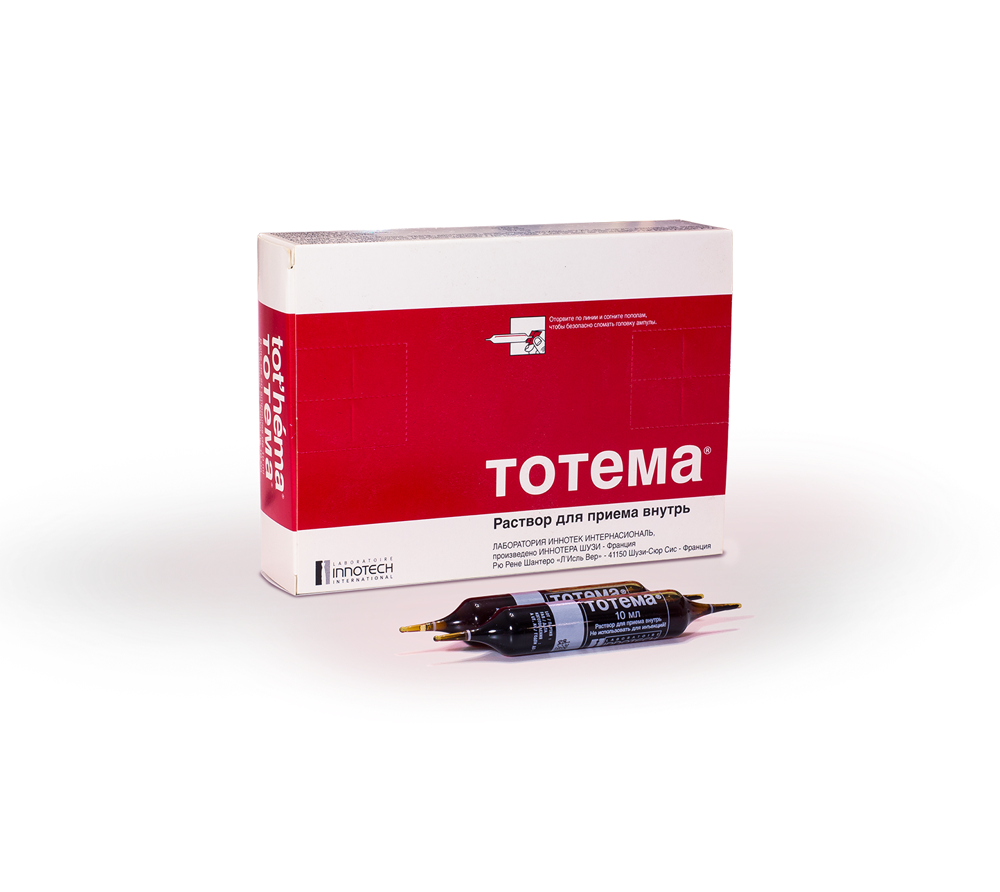

TOTEMA
Расширить назначения через формирование имиджа Тотема, как препарата выбора при ЖДА легкой степени тяжести у беременных
Лечение ЖДА легкой степени (уровень Hb 90-110 г/л) у беременных с запорами
Сформировать восприятие Тотема, как препарата выбора у беременных с уровнем Hb 90-110 г/л и запорами (в том числе, возникающих на фоне приема других препаратов железа)
Тотема в отличие от Сорбифера в 19 раз реже вызывает запоры у беременных женщин, обеспечивая при уровне Нb 90-110 г/л быстрый его прирост уже в первые 2 недели терапии
Запоры у беременных – одна из наиболее распространенных проблем, встречающаяся в 50 до 93% случаев. Чаще всего запоры возникают в период с 17 до 36 недели гестации, в тот же период, когда у женщины развивается анемия
Для пациентов с уровнем Hb 90-110 г/л и запорами:
- При уровне Hb 90-110 г/л Тотема обеспечивает значительный его прирост ко 2–ой недели терапии, а полную нормализацию уже через месяц
- В 19 раз реже вызывает запоры по сравнению с Сорбифером
- Снижение частоты запоров связано с жидкой формой препарата и наличием в составе глицерола
Алгоритм работы на визите у гинеколога в зависимости от текущего опыта использования им Тотема
Портрет пациента на визите
Беременные с уровнем Hb 90-110 г/л и гестационными запорами
Текущая ситуация у врача
СПРИНТЕР. Назначает Тотема коротким курсом
СТРЕЛОЧНИК. Назначает Сорбифер, видит ПЭ со стороны ЖКТ
НИГИЛИСТ. Не назначает Тотема
Цель на визит
Продление курса терапии Тотема
Перевод на Тотема
Первичное назначение Тотема
ОСНОВНОЙ АРГУМЕНТ: Тотема в 19 раз реже вызывает запоры,
чем Сорбифер у беременных (слайд 2 презентера)
Вариант1 (если врачу важна переносимость) Тотема в 19 раз реже вызвает запоры благодаря жидкой форме и входящему в состав глицеролу (слайд 3 презентера)
Вариант 2 (если врачу важна эффективность) Тотема при анемии легкой степени обеспечивает прирост Hb на 18% через 2 недели терапии(слайд 4 презентера), что позволяет достичь целевого уровня (110 г/л) у беременной с ЖДА
Аргументация против Сорбифер
… и имеет возможность титрации дозы
от лечебной до профилактической (слайд 5 презентера)
… и обеспечивает быстрый прирост Hb уже ко 2-ой недели терапии (слайд 4 презентера)
| Портрет пациента на визите | Беременные с уровнем Hb 90-110 г/л и гестационными запорами | ||
| Текущая ситуация у врача | СПРИНТЕР. Назначает Тотема коротким курсом | СТРЕЛОЧНИК. Назначает Сорбифер, видит ПЭ со стороны ЖКТ | НИГИЛИСТ. Не назначает Тотема |
| Цель на визит | Продление курса терапии Тотема | Перевод на Тотема | Первичное назначение Тотема |
| ОСНОВНОЙ АРГУМЕНТ: Тотема в 19 раз реже вызывает запоры, чем Сорбифер у беременных (слайд 2 презентера) |
Вариант1 (если врачу важна переносимость) Тотема в 19 раз реже вызвает запоры благодаря жидкой форме и входящему в состав глицеролу (слайд 3 презентера) Вариант 2 (если врачу важна эффективность) Тотема при анемии легкой степени обеспечивает прирост Hb на 18% через 2 недели терапии(слайд 4 презентера), что позволяет достичь целевого уровня (110 г/л) у беременной с ЖДА |
||
| Аргументация против Сорбифер | … и имеет возможность титрации дозы от лечебной до профилактической (слайд 5 презентера) | … и обеспечивает быстрый прирост Hb уже ко 2-ой недели терапии (слайд 4 презентера) | |